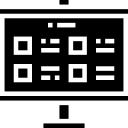
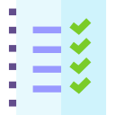

Estrutura do HTML
Tag HTML
O elemento <html> (ou HTML root element) representa a raiz de um HTML ou XHTML documento. Todos os outros elementos devem ser descendentes desse elemento.

Tag Head
O elemento HTML <head> providencia informações gerais (metadados) sobre o documento, incluindo seu título e links para scripts e folhas de estilos.
Tag Body
O elemento <body> do HTML representa o conteúdo de um documento HTML. É permitido apenas um <body> por documento.

Tag Main
O elemento <main> define o conteúdo principal dentro do <body> em seu documento ou aplicação. Entende-se como conteúdo principal aquele relacionado diretamente com o tópico central da página ou com a funcionalidade central da aplicação.
Tag Section
O elemento HTML <section> representa uma seção genérica contida em um documento HTML, geralmente com um título, quando não existir um elemento semântico mais específico para representá-lo.
Tag img
O elemento <img> (Elemento Imagem HTML) representa a inserção de imagem no documento, sendo implementado também pelo HTML5 para uma melhor experiência com o elemento <figure> e <figcaption>.

Tag audio
O elemento <audio> é utilizado para embutir conteúdo de som em um documento HTML ou XHTML. Foi adicionado como parte do HTML5.
Tag video
O elemento HTML <video> incorpora um reprodutor de mídia que suporta a reprodução de vídeo no documento. Você também pode usar <video> para conteúdo de áudio, mas o elemento <audio> pode proporcionar uma experiência de usuário mais adequada.

Tag a (link/âncora)
O elemento <a> em HTML (ou elemento âncora), com o atributo href cria hiperligações para páginas web, arquivos, endereços de e-mail, âncoras na mesma página ou outras URLs. O conteúdo dentro da tag deve indicar claramente o destino do link.

Tag ul
O elemento HTML <ul> (Lista Desordenada) representa uma lista de itens sem ordem rígida, ou seja, uma coleção em que a posição dos elementos não importa.

Tag li
O elemento HTML <li> representa um item de uma lista. Deve estar contido em um elemento pai: lista ordenada (<ol>), lista desordenada (<ul>) ou menu (<menu>).
